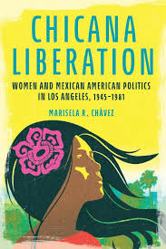

Introduction
The reading of Chicana Liberation: Women and Mexican American Politics in Los Angeles, 1945-1981 by Marisela R. Chávez brings to life the voices and struggles of Chicana activists who shaped the political landscape of Los Angeles from post-World War II era through the early 1980s.
Chávez does argues that Chicanas developed a form of “bridging activism,” that was navigated between the Chicano movement, feminist organizing, and a broader scope of social justice struggles. She places their activism within the large historical contexts of civil rights, labor movements, and the second-wave feminism.
This offered a powerful counterpoint to male-dominated narratives of political history. As Chávez stated, “Despite their attempts to assert the importance of their place in the historical record, they have been overwhelmingly overlooked in the literature that chronicles mainstream U.S. feminist history” (Chávez, 2024, p.9).
Approach and Methodology
Approach
The book is a crucial addition to Chicana feminist history, shining a light on women who often found themselves at crossroads of racial and gender struggles. The review evaluates Chicana Liberation by examining Chávez’s approach, her success in capturing women’s history, and her book’s contribution to the historiography of Mexican American political activism. Chávez employs a rich, intersectional approach that weaves together oral histories, archival sources, and feminist theory to reconstruct the experiences of Chicana activists. She does this by amplifying personal narratives and ensures that these women are often marginalized in traditional political histories.

Methodology
One of the most striking aspects of her approach is her commitment to intersectionality. Chávez explores how race, gender, and class shaped the activism of Chicanas, showing that their struggles were not just about racial justice but also about gender equality within their own communities. She does not shy away from addressing the tensions between Chicana feminists and their male counterparts in the Chicano movement, nor does she ignore the ways in which mainstream often overlooked or misunderstood the need of women of color. Chávez notes that “these global and local encuentros shaped the practice of Chicana feminism via the transnational exchange of ideas and experiences that helped Chicanas understand their struggle in the context of global struggles for justice and exposed the blond spots of U.S. feminism” (Chávez, 2024, p.94).
Intersectionality and Bridging Activism
Intersectionality
Chávez does acknowledge the challenges of writing women’s history, particularly the difficulty of finding archival material that fully represents women’s contributions. She does lean on oral histories, that allows women to tell their own stories from their perspectives and point of view. As Alessandro Portelli reminds us, “oral sources gives us information about … social groups whose written history is either missing or distorted” (Chávez, 2024, p.12). With taking this approach, it does not only humanize the historical narrative but also challenges the traditional reliance on institutional records, which have historically excluded contributions of women.
The author’s ability to capture the diversity of Chicana political activism is one of the book’s greatest strengths I would say. She provides detailed accounts of organizations like the Comisión Femenil Mexicana Nacional and the Mujeres Activas en Letras y Cambio Social (MALCS), as well as other individual activists who worked at the intersection of labor rights, education, and gender equality. Chávez does highlight the role of the International Women’s Year conference in Mexico City in 1975, noting that “between two hundred and three hundred Mexican American women from across the United States, representing another phase in … development of Chicana feminist consciousness and the bridging activism that continued to propel the Chicana liberation movement forward and in new directions” (Chávez, 2024, p.70). Another strength is the amount of significance she portrays on Chicana feminism. Rather than presenting it as a monolithic movement, Chávez illustrates how Chicana feminist crafted a unique form of activism that blends cultural identity with gender advocacy. Now Chávez work does align with other feminist scholars like Gloria Anzaldúa, who emphasized the importance of intersectionality. Anzaldúa’s concept of “mestiza consciousness” (Anzaldúa, 2012) resonates with Chávez’s portrayal of Chicana identity as fluid and multifaceted.

Bridging Activism
In conclusion, Chicana Liberation: Women and Mexican American Politics in Los Angeles, 1945-1981 is a powerful and necessary book that brings an overdue attention to the political activism of Chicanas in Los Angeles. Chávez integrates personal narratives with historical analysis and painting a realistic picture of women who refused to be sidelined in either the Chicano movement or the feminist movement. With her use of oral histories, she is able to emphasize on intersectionality and her with concept of “bridging activism” makes her book and analysis standout contribution to Chicana feminist. The books overall impact is undeniable Chávez’s work is a testament to the resilience and ingenuity of Chicana activists, and it also serves as an important role and reminder that history is not just about institutions and leader but also about the grassroots from the unheard voices of people who were involved.